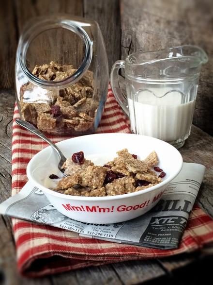
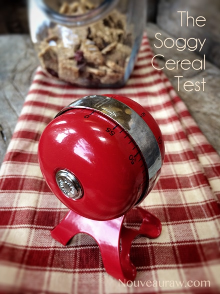
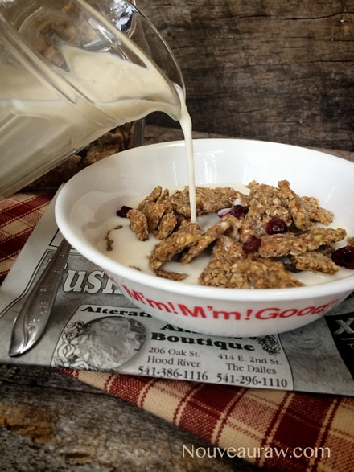
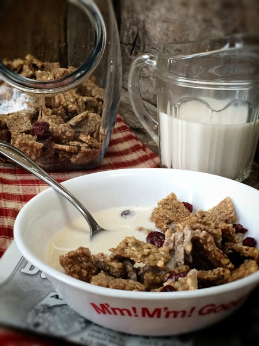
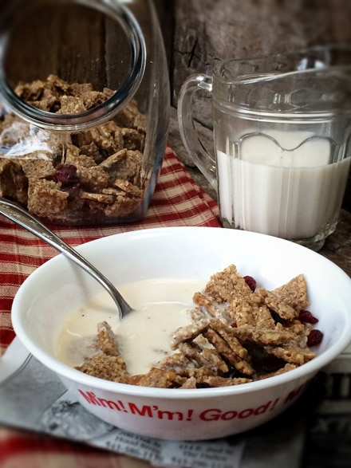
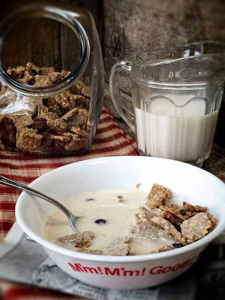
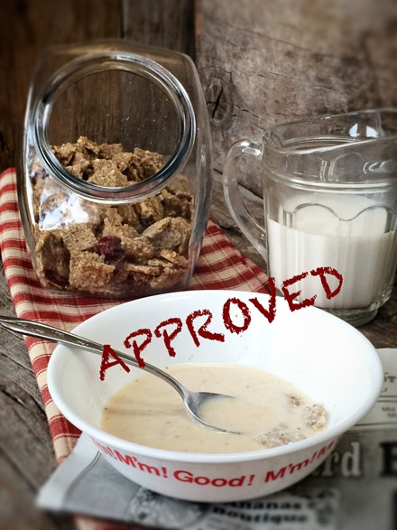

Almond Butter Cereal Crunch

~ raw, vegan, gluten-free ~
The title may have given it away but the secret ingredient in this cereal is almond butter. :) Whether you buy or make your raw almond butter there will always be slight variances in consistency and texture. So here is a good lesson on how to handle raw ingredients and the tweaking that raw recipes usually require.
If the almond butter is really thick, a little more liquid may be required and vice-versa Other things to take into account might be, was salt added, is it actually raw or were the almonds roasted? These types of things will definitely alter the fast of the final product. And with raw you don’t have the luxury of cooking to mellow and or combine flavors.
None of these things are wrong or game-breakers, I just want you to embrace the slight differences that will affect the end result. This goes for any recipe that you make. As always I want to encourage you to find ways to express your love through food, not only to those around you but to yourself as well. The gift of health that you are sharing one spoonful at a time is a real blessing. Honor the food and honor your body.
If a recipe doesn’t turn exactly as expected, don’t beat yourself up (or the creator of said recipe hehe). Make peace with yourself because sometimes mistakes can lead to the creation of a new masterpiece. A while back I wrote a post called ” The value of taste testing as you go”. If you haven’t read that, please do, it can save a lot of heartache in the kitchen. Another good read is, “Flavor Balancing and how to fix a recipe”. My heartfelt wish is to support you and to help build your confidence in the kitchen. Remember, I was the gal who trembled when the spice drawer was opened and the one who ran if a recipe had more than three ingredients. :)
So… the Almond Butter Cereal Crunch… this cereal turned out nice and crunchy, nutty and sweet. I recommend topping it with some fresh or dried fruit to add additional texture and flavor. These little cereal squares are also wonderful by the handful as a snack or even toss them in a baggie along with other nuts and dried fruits for a yummy trail mix. Just have fun with this recipe, and make it your own.

Ingredients: yields 5 cups dry cereal
- 1 1/4 cups dry raw buckwheat groats, soaked 30+ minutes
- 1/2 cup raw coconut crystals
- 1/2 cup natural almond butter
- 1/4 tsp almond extract
- 1/3 cup water (depending on almond butter consistency)
- 2 tsp vanilla extract
- 1 tsp ground Ceylon cinnamon
- 1/4 tsp Himalayan pink salt
- 1-2 tsp liquid stevia (optional)
Preparation:
- After soaking the buckwheat rinse until the water runs clear. This will take a while, it a test of patience.
- In the food processor combine the coconut crystals, almond butter, almond extract, (hold the water for now), vanilla, cinnamon, and salt. Process together until it is creamy and smooth.
- If the mixture is too thick, start adding water 1 Tbsp at a time.
- The water amount will differ based on your almond butter. Raw store-bought almond butter is often smoother than homemade.
- Taste test to see if you wish to add the stevia or any other sweetener.
- Add the buckwheat and pulse together. Don’t get too crazy and pulverize the buckwheat.
- Spread the mixture on the teflex sheet that comes with the dehydrator. I spread mine to all four sides of the tray.
- Score the batter into desired size squares.
- You could leave it whole and just break apart after dehydration if you wanted to.
- I used a ruler and pizza cutter to make my score marks.
- If the batter is too wet to “hold” the score marks, wait until it has dehydrated for a few hours and then try again.
- Dehydrate at 115 degrees for about 9 hours, flip the batter over onto the mesh screen, peeling off the teflex, and continue drying for another 9 hours or until completely dry.
- Allow it to cool for storing so moisture doesn’t build up in the container.
- Store in airtight containers. They will freeze wonderfully if you want to create a stockpile. :)
FDA (Food Determining Association) conducted a test at Nouveau Raw Kitchens, The Soggy Cereal Test. The subject: Crunchy Peanut Butter and Buckwheat Cereal Squares. Object: to see how long this raw cereal could stand up to almond milk before getting soggy. No animals were harmed in this test. Results posted below.

Step 1 ~ Add nut milk to a bowl of Raw Almond Butter Cereal Crunch,sprinkled with dried cranberries.

Step 2 ~ 10 minutes into the test. Oh boy, restraint is needed!
Results ~ Still crispy.
Step 3 ~ 20 minutes into the test.

Results ~ Still crispy, edges are getting a little soft, but still has a nice crunch.
Step 4 ~ 30 minutes into the test.

Results ~ Still crispy. Notice: the contents of the bowl are decreasing.
I don’t think I have ever eaten a bowl of cereal this slow before. Ahhh!
Step 5 ~ 40 minutes into the test.

Results ~ Still crispy in the center of the squares.
If you have a slow eater in your family… this cereal is for them!
Step 6 ~ After 45 minutes… the last bite still had crunch. Approved!

This concludes our test.